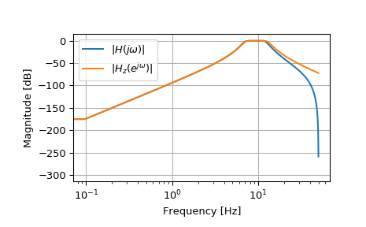

scipy.signal.bilinear¶
-
scipy.signal.bilinear(b, a, fs=1.0)[source]¶ Return a digital IIR filter from an analog one using a bilinear transform.
Transform a set of poles and zeros from the analog s-plane to the digital z-plane using Tustin’s method, which substitutes
(z-1) / (z+1)fors, maintaining the shape of the frequency response.- Parameters
- barray_like
Numerator of the analog filter transfer function.
- aarray_like
Denominator of the analog filter transfer function.
- fsfloat
Sample rate, as ordinary frequency (e.g., hertz). No prewarping is done in this function.
- Returns
- zndarray
Numerator of the transformed digital filter transfer function.
- pndarray
Denominator of the transformed digital filter transfer function.
See also
Examples
>>> from scipy import signal >>> import matplotlib.pyplot as plt
>>> fs = 100 >>> bf = 2 * np.pi * np.array([7, 13]) >>> filts = signal.lti(*signal.butter(4, bf, btype='bandpass', analog=True)) >>> filtz = signal.lti(*signal.bilinear(filts.num, filts.den, fs)) >>> wz, hz = signal.freqz(filtz.num, filtz.den) >>> ws, hs = signal.freqs(filts.num, filts.den, worN=fs*wz)
>>> plt.semilogx(wz*fs/(2*np.pi), 20*np.log10(np.abs(hz).clip(1e-15)), label=r'$|H(j \omega)|$') >>> plt.semilogx(wz*fs/(2*np.pi), 20*np.log10(np.abs(hs).clip(1e-15)), label=r'$|H_z(e^{j \omega})|$') >>> plt.legend() >>> plt.xlabel('Frequency [Hz]') >>> plt.ylabel('Magnitude [dB]') >>> plt.grid()
